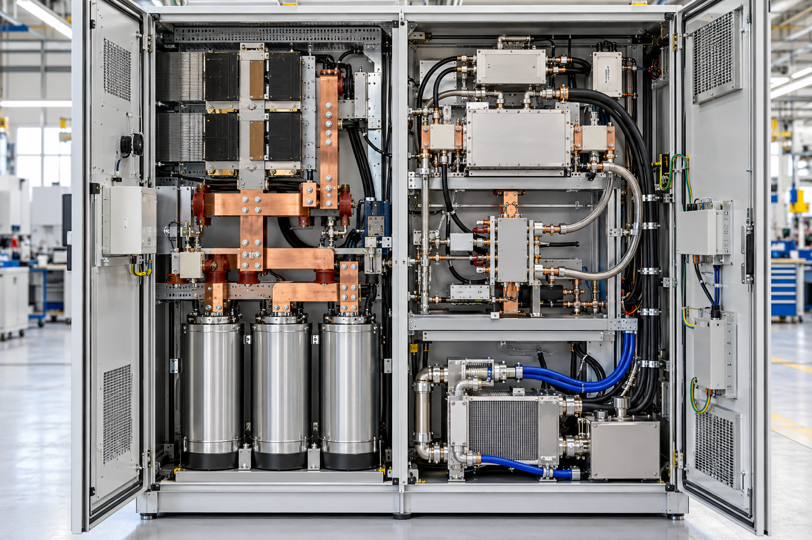
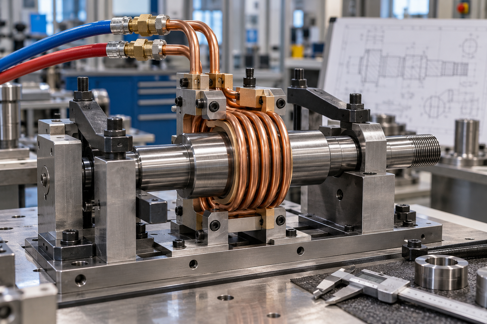
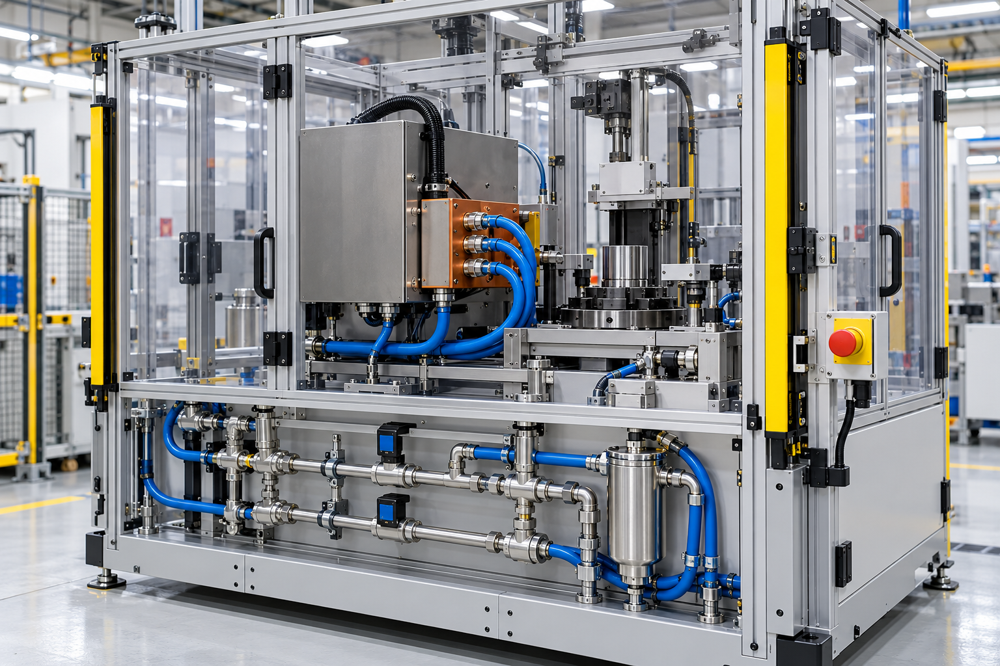

RF 전원·매칭 구성
가열 목적에 맞는 전원 용량, 매칭, 제어부 구성을 검토합니다.
Technology
전원, 매칭, 코일, 냉각, 제어, 안전 구조를 하나의 공정 시스템으로 통합합니다.
Core Capability
같은 출력의 장비라도 코일 형상, 거리, 냉각, 가열 시간, 지그 구조에 따라 결과가 달라집니다. 그래서 백마고주파 사이트는 “분석-설계-제작-검증”의 흐름을 기술 신뢰의 중심으로 구성했습니다.

가열 목적에 맞는 전원 용량, 매칭, 제어부 구성을 검토합니다.

워크피스 형상과 가열 영역에 최적화된 코일·지그 구성을 설계합니다.

안정적인 운전을 위해 냉각 라인, 커버, 인터록, 센서를 검토합니다.
System Flow
문의부터 납품 후 기술 지원까지 고객이 이해하기 쉬운 단계로 제시했습니다.
재질, 생산량, 목표 온도, 설치 조건 확인
전원·코일·냉각·제어 구성안 수립
프레임, 전장, 지그, 코일 제작 및 조립
시운전, 반복성 확인, 운전 조건 정리
현장 반입, 세팅, 작업자 교육
유지관리, 개선 상담, 추가 공정 대응